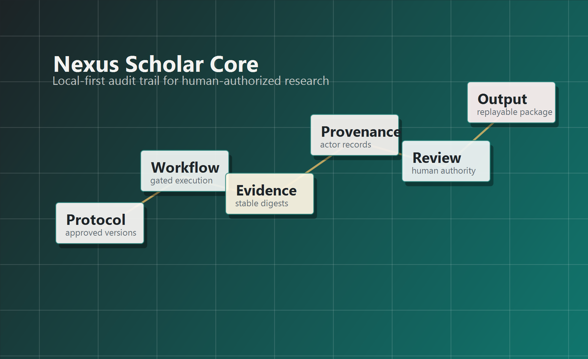

Human-authorized science
Suggestions, drafts, and model outputs remain proposals until an authorized human action accepts them.

Audit-oriented early alpha
Nexus Scholar Core is an early-alpha local-first C# kernel exploring reconstructable research methods, human decisions, provenance, automation, deviations, and outputs.
Ecosystem role
Suggestions, drafts, and model outputs remain proposals until an authorized human action accepts them.
Protocols, amendments, evidence, provenance, snapshots, and outputs are designed to be audited after the fact.
The Core package owns the scientific contracts while apps, renderers, storage, and integrations stay outside the domain boundary.
Community entry points
The site now separates public narrative from developer contracts. Blog posts explain the motivation and market position, while module pages document implemented behavior and current non-claims.